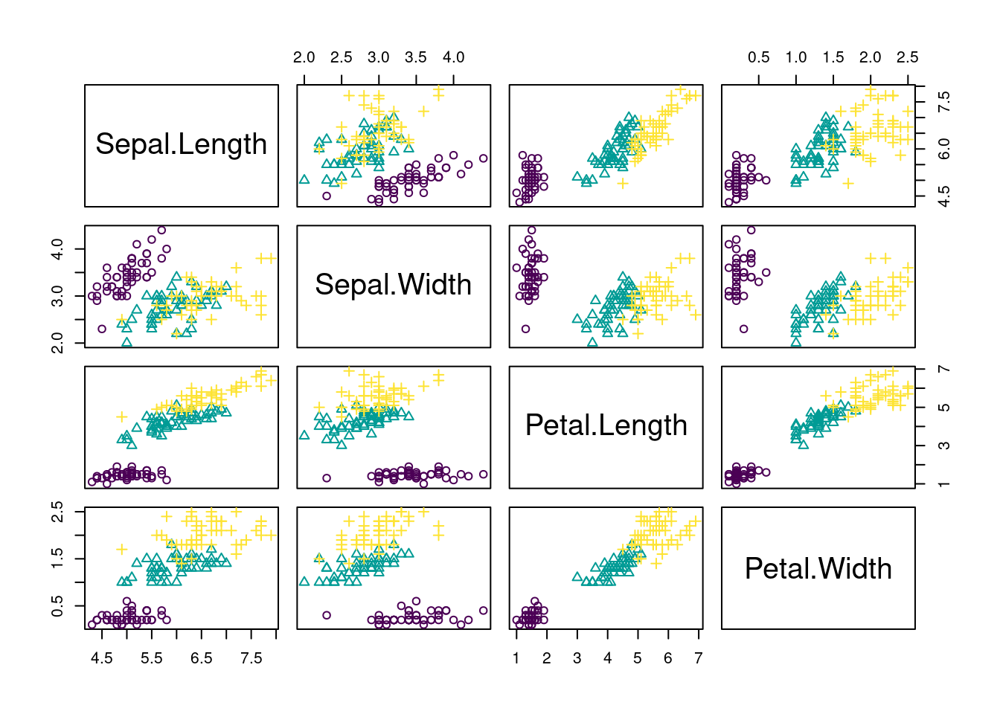

2 Introduction to Machine Learning
There are three basic machine learning tasks
- Supervised learning
- Unsupervised learning
- Reinforcement learning
In supervised learning, you train algorithms using labeled data, which means that you already know the correct answer for a part of the data (the so called training data).
Unsupervised learning in contrast is a technique, where one does not need to monitor the model or apply labels. Instead, you allow the model to work on its own to discover information.
Reinforcement learning is a technique that emulates a game-like situation. The algorithm finds a solution by trial and error and gets either rewards or penalties for every action. As in games, the goal is to maximize the rewards. We will talk more about this technique on the last day of the course.
For the moment, we will focus on the first two tasks, supervised and unsupervised learning. To do so, we will begin with a small example. But before you start with the code, here is a video to prepare you for what we will do in the class:
2.1 Unsupervised Learning
In unsupervised learning, we want to identify patterns in data without having any examples (supervision) about what the correct patterns / classes are. As an example, consider the iris data set. Here, we have 150 observations of 4 floral traits:
colors = hcl.colors(3)
traits = as.matrix(iris[,1:4])
species = iris$Species
image(y = 1:4, x = 1:length(species) , z = traits,
ylab = "Floral trait", xlab = "Individual")
segments(50.5, 0, 50.5, 5, col = "black", lwd = 2)
segments(100.5, 0, 100.5, 5, col = "black", lwd = 2)The observations are from 3 species and indeed those species tend to have different traits, meaning that the observations form 3 clusters.
pairs(traits, pch = as.integer(species), col = colors[as.integer(species)])
However, imagine we don’t know what species are, what is basically the situation in which people in the antique have been. The people just noted that some plants have different flowers than others, and decided to give them different names. This kind of process is what unsupervised learning does.
2.1.1 Hierarchical Clustering
A cluster refers to a collection of data points aggregated together because of certain similarities.
In hierarchical clustering, a hierarchy (tree) between data points is built.
- Agglomerative: Start with each data point in their own cluster, merge them up hierarchically.
- Divisive: Start with all data points in one cluster, and split hierarchically.
Merges / splits are done according to linkage criterion, which measures distance between (potential) clusters. Cut the tree at a certain height to get clusters.
Here an example
set.seed(123)
#Reminder: traits = as.matrix(iris[,1:4])
d = dist(traits)
hc = hclust(d, method = "complete")
plot(hc)
rect.hclust(hc, k = 3) #Draw rectangles around the branches.
Same plot, but with colors for true species identity
library(ape)
plot(as.phylo(hc),
tip.color = colors[as.integer(species)],
direction = "downwards")hcRes3 = cutree(hc, k = 3) #Cut a dendrogram tree into groups.Calculate confusion matrix. Note we are switching labels here so that it fits to the species.
tmp = hcRes3
tmp[hcRes3 == 2] = 3
tmp[hcRes3 == 3] = 2
hcRes3 = tmp
table(hcRes3, species)## species
## hcRes3 setosa versicolor virginica
## 1 50 0 0
## 2 0 27 1
## 3 0 23 49Note that results might change if you choose a different agglomeration method, distance metric or scale of your variables. Compare, e.g. to this example
hc = hclust(d, method = "ward.D2")
plot(as.phylo(hc),
tip.color = colors[as.integer(species)],
direction = "downwards")
hcRes3 = cutree(hc, k = 3) #Cut a dendrogram tree into groups.
table(hcRes3, species)## species
## hcRes3 setosa versicolor virginica
## 1 50 0 0
## 2 0 49 15
## 3 0 1 35Which method is best?
library(dendextend)methods = c("ward.D", "single", "complete", "average",
"mcquitty", "median", "centroid", "ward.D2")
out = dendlist() #Create a dendlist object from several dendrograms.
for(i in seq_along(methods)) {
res = hclust(d, method = methods[i])
out = dendlist(out, as.dendrogram(res))
}
names(out) = methods
print(out)## $ward.D
## 'dendrogram' with 2 branches and 150 members total, at height 199.6205
##
## $single
## 'dendrogram' with 2 branches and 150 members total, at height 1.640122
##
## $complete
## 'dendrogram' with 2 branches and 150 members total, at height 7.085196
##
## $average
## 'dendrogram' with 2 branches and 150 members total, at height 4.062683
##
## $mcquitty
## 'dendrogram' with 2 branches and 150 members total, at height 4.497283
##
## $median
## 'dendrogram' with 2 branches and 150 members total, at height 2.82744
##
## $centroid
## 'dendrogram' with 2 branches and 150 members total, at height 2.994307
##
## $ward.D2
## 'dendrogram' with 2 branches and 150 members total, at height 32.44761
##
## attr(,"class")
## [1] "dendlist"get_ordered_3_clusters = function(dend) {
#order.dendrogram function returns the order (index)
#or the "label" attribute for the leaves.
cutree(dend, k = 3)[order.dendrogram(dend)]
}
dend_3_clusters = lapply(out, get_ordered_3_clusters)
compare_clusters_to_iris = function(clus){
FM_index(clus, rep(1:3, each = 50), assume_sorted_vectors = TRUE)
}
clusters_performance = sapply(dend_3_clusters, compare_clusters_to_iris)
dotchart(sort(clusters_performance), xlim = c(0.3, 1),
xlab = "Fowlkes-Mallows index",
main = "Performance of linkage methods
in detecting the 3 species \n in our example",
pch = 19)
We might conclude that ward.D2 works best here. However, as we will learn later, optimizing the method without a hold-out for testing means that our model may be overfitting. We should check this using cross-validation.
2.1.2 K-means Clustering
Another example for an unsupervised learning algorithm is k-means clustering, one of the simplest and most popular unsupervised machine learning algorithms.
To start with the algorithm, you first have to specify the number of clusters (for our example the number of species). Each cluster has a centroid, which is the assumed or real location representing the center of the cluster (for our example this would be how an average plant of a specific species would look like). The algorithm starts by randomly putting centroids somewhere. Afterwards each data point is assigned to the respective cluster that raises the overall in-cluster sum of squares (variance) related to the distance to the centroid least of all. After the algorithm has placed all data points into a cluster the centroids get updated. By iterating this procedure until the assignment doesn’t change any longer, the algorithm can find the (locally) optimal centroids and the data points belonging to this cluster. Note that results might differ according to the initial positions of the centroids. Thus several (locally) optimal solutions might be found.
The k in K-means refers to the number of clusters and the ‘means’ refers to averaging the data-points to find the centroids.
A typical pipeline for using k-means clustering looks the same as for other algorithms. After having visualized the data, we fit a model, visualize the results and have a look at the performance by use of the confusion matrix. By setting a fixed seed, we can ensure that results are reproducible.
set.seed(123)
#Reminder: traits = as.matrix(iris[,1:4])
kc = kmeans(traits, 3)
print(kc)## K-means clustering with 3 clusters of sizes 50, 62, 38
##
## Cluster means:
## Sepal.Length Sepal.Width Petal.Length Petal.Width
## 1 5.006000 3.428000 1.462000 0.246000
## 2 5.901613 2.748387 4.393548 1.433871
## 3 6.850000 3.073684 5.742105 2.071053
##
## Clustering vector:
## [1] 1 1 1 1 1 1 1 1 1 1 1 1 1 1 1 1 1 1 1 1 1 1 1 1 1 1 1 1 1 1 1 1 1 1 1 1 1
## [38] 1 1 1 1 1 1 1 1 1 1 1 1 1 2 2 3 2 2 2 2 2 2 2 2 2 2 2 2 2 2 2 2 2 2 2 2 2
## [75] 2 2 2 3 2 2 2 2 2 2 2 2 2 2 2 2 2 2 2 2 2 2 2 2 2 2 3 2 3 3 3 3 2 3 3 3 3
## [112] 3 3 2 2 3 3 3 3 2 3 2 3 2 3 3 2 2 3 3 3 3 3 2 3 3 3 3 2 3 3 3 2 3 3 3 2 3
## [149] 3 2
##
## Within cluster sum of squares by cluster:
## [1] 15.15100 39.82097 23.87947
## (between_SS / total_SS = 88.4 %)
##
## Available components:
##
## [1] "cluster" "centers" "totss" "withinss" "tot.withinss"
## [6] "betweenss" "size" "iter" "ifault"Visualizing the results. Color codes true species identity, symbol shows cluster result.
plot(iris[c("Sepal.Length", "Sepal.Width")],
col = colors[as.integer(species)], pch = kc$cluster)
points(kc$centers[, c("Sepal.Length", "Sepal.Width")],
col = colors, pch = 1:3, cex = 3)
We see that there are are some discrepancies. Confusion matrix:
table(iris$Species, kc$cluster)##
## 1 2 3
## setosa 50 0 0
## versicolor 0 48 2
## virginica 0 14 36If you want to animate the clustering process, you could run
library(animation)
saveGIF(kmeans.ani(x = traits[,1:2], col = colors),
interval = 1, ani.width = 800, ani.height = 800)Elbow technique to determine the probably best suited number of clusters:
set.seed(123)
getSumSq = function(k){kmeans(traits, k, nstart=25)$tot.withinss}
#Perform algorithm for different cluster sizes and retrieve variance
iris.kmeans1to10 = sapply(1:10, getSumSq)
plot(1:10, iris.kmeans1to10, type="b", pch = 19, frame = FALSE,
xlab="Number of clusters K",
ylab="Total within-clusters sum of squares",
col = c("black", "red", rep("black", 8)))
Often, one is interested in sparse models. Furthermore, higher k than necessary tends to overfitting. At the kink in the picture, the sum of squares dropped enough and k is still low enough. But keep in mind, this is only a rule of thumb and might be wrong in some special cases.
2.1.3 Density-based Clustering
Determine the affinity of a data point according to the affinity of its k nearest neighbors. This is a very general description as there are many ways to do so.
set.seed(123)
#Reminder: traits = as.matrix(iris[,1:4])
library(dbscan)
kNNdistplot(traits, k = 4) #Calculate and plot k-nearest-neighbor distances
abline(h = 0.4, lty = 2)
dc = dbscan(traits, eps = 0.4, minPts = 6)
print(dc)## DBSCAN clustering for 150 objects.
## Parameters: eps = 0.4, minPts = 6
## The clustering contains 4 cluster(s) and 32 noise points.
##
## 0 1 2 3 4
## 32 46 36 14 22
##
## Available fields: cluster, eps, minPtslibrary(factoextra)## Lade nötiges Paket: ggplot2## Welcome! Want to learn more? See two factoextra-related books at https://goo.gl/ve3WBafviz_cluster(dc, traits, geom = "point", ggtheme = theme_light())
2.1.4 Model-based Clustering
The last class of methods for unsupervised clustering are so-called model-based clustering methods.
library(mclust)## Package 'mclust' version 5.4.7
## Type 'citation("mclust")' for citing this R package in publications.mb = Mclust(traits)Mclust automatically compares a number of candidate models (#clusters, shape) according to BIC. We can look at the selected model via
mb$G # two clusters## [1] 2mb$modelName # > ellipsoidal, equal shape## [1] "VEV"We see that the algorithm prefers to have 2 clusters. For better comparability to the other 2 methods, we will overrule this by setting:
mb3 = Mclust(traits, 3)Result in terms of the predicted densities for 3 clusters
plot(mb3, "density")
Predicted clusters
plot(mb3, what=c("classification"), add = T)Confusion matrix
table(iris$Species, mb3$classification)##
## 1 2 3
## setosa 50 0 0
## versicolor 0 45 5
## virginica 0 0 502.1.5 Ordination
Ordination is used in explorative analysis and compared to clustering, similar objects are ordered together. So there is a relationship between clustering and ordination. Here a PCA ordination on on the iris data set.
pcTraits = prcomp(traits, center = TRUE, scale. = TRUE)
biplot(pcTraits, xlim = c(-0.25,0.25), ylim = c(-0.25,0.25))
You can cluster the results of this ordination, ordinate before clustering, or superimpose one on the other.
2.2 Supervised Learning: Rregression and Classification
The two most prominent branches of supervised learning are regression and classification. Fundamentally, classification is about predicting a label and regression is about predicting a quantity. The following video explains that in more depth:
2.2.1 Supervised Regression Using Random Forest
The random forest (RF) algorithm is possibly the most widely used machine learning algorithm and can be used for regression and classification. We will talk more about the algorithm tomorrow.
For the moment, we want to go through a typical workflow for a supervised regression: First, we visualize the data. Next, we fit the model and lastly we visualize the results. We will again use the iris data set that we used before. The goal is now to predict Sepal.Length based on the information about the other variables (including species).
Fitting the model
library(randomForest)m1 = randomForest(Sepal.Length ~ ., data = iris) # ~.: against all others
# str(m1)
# m1$type
# predict(m1)
print(m1)##
## Call:
## randomForest(formula = Sepal.Length ~ ., data = iris)
## Type of random forest: regression
## Number of trees: 500
## No. of variables tried at each split: 1
##
## Mean of squared residuals: 0.1364625
## % Var explained: 79.97Visualization of the results:
par(mfrow = c(1,2))
plot(predict(m1), iris$Sepal.Length,
xlab = "Predicted", ylab = "Observed")
abline(0,1)
varImpPlot(m1)To understand the structure of a random forest in more detail, we can use a package from GitHub.
# devtools::install_github('araastat/reprtree')
reprtree:::plot.getTree(m1, iris)Here, the regression tree is shown.
2.2.2 Supervised Classification Using Random Forest
With the random forest, we can also do classification. The steps are the same as for regression tasks, but we can additionally see how well it performed by looking at the confusion matrix. Each row of this matrix contains the instances in a predicted class and each column represents the instances in the actual class. Thus the diagonals are the correctly predicted classes and the off-diagnoal elements are the falsely classified elements.
Fitting the model:
set.seed(123)
m1 = randomForest(Species ~ ., data = iris)Visualizing the fitted model:
par(mfrow = c(1,2))
reprtree:::plot.getTree(m1, iris)
Visualizing results ecologically:
oldpar = par(mfrow = c(1, 2))
plot(iris$Petal.Width, iris$Petal.Length, col = iris$Species,
main = "Observed")
plot(iris$Petal.Width, iris$Petal.Length, col = predict(m1),
main = "Predicted")
par(oldpar) #Reset par.Confusion matrix:
table(predict(m1), iris$Species)##
## setosa versicolor virginica
## setosa 50 0 0
## versicolor 0 47 4
## virginica 0 3 462.3 Introduction to TensorFlow
One of the most commonly used frameworks for machine learning is TensorFlow. TensorFlow is an open source linear algebra library with focus on neural networks, published by Google in 2015. TensorFlow supports several interesting features, in particular automatic differentiation, several gradient optimizers and CPU and GPU parallelization.
These advantages are nicely explained in the following video:
To sum up the most important points of the video:
- TensorFlow is a math library which is highly optimized for neural networks
- If a GPU is available, computations can be easily run on the GPU but even on a CPU TensorFlow is still very fast
- The “backend” (i.e. all the functions and all computations) are written in C++ and CUDA (CUDA is a programming language for NVIDIA GPUs)
- The interface (the part of TensorFlow we use) is written in Python and is also available in R, which means, we can write the code in R/Python but it will be executed by the (compiled) C++ backend.
All operations in TensorFlow are written in C++ and are highly optimized. But don’t worry, we don’t have to use C++ to use TensorFlow because there are several bindings for other languages. TensorFlow officially supports a Python API, but meanwhile there are several community carried APIs for other languages:
- R
- Go
- Rust
- Swift
- JavaScript
In this course we will use TensorFlow with the https://tensorflow.rstudio.com/ binding, that was developed and published 2017 by the RStudio team. First, they developed an R package (reticulate) for calling Python in R. Actually, we are using the Python TensorFlow module in R (more about this later).
TensorFlow offers different levels of API. We could implement a neural network completely by ourselves or we could use Keras which is provided as a submodule by TensorFlow. Keras is a powerful module for building and training neural networks. It allows us building and training neural networks in a few lines of codes. Since the end of 2018, Keras and TensorFlow are completly interoperable, allowing us to utilize the best of both. In this course, we will show how we can use Keras for neural networks but also how we can use the TensorFlow’s automatic differenation for using complex objective functions.
Useful links:
- TensorFlow documentation (This is for the Python API, but just replace the ‘.’ with ‘$.’)
- Rstudio TensorFlow website
2.3.1 TensorFlow Data Containers
TensorFlow has two data containers (structures):
- constant (tf$constant): Creates a constant (immutable) value in the computation graph.
- variable (tf$Variable): Creates a mutable value in the computation graph (used as parameter/weight in models).
To get started with TensorFlow, we have to load the library and check if the installation worked.
library(tensorflow)
# Don't worry about weird messages. TensorFlow supports additional optimizations
exists("tf")## [1] TRUEDon’t worry about weird messages (they will only appear once at the start of the session).
We now can define the variables and do some math with them:
a = tf$constant(5)
b = tf$constant(10)
print(a)## tf.Tensor(5.0, shape=(), dtype=float32)print(b)## tf.Tensor(10.0, shape=(), dtype=float32)c = tf$add(a, b)
print(c)## tf.Tensor(15.0, shape=(), dtype=float32)tf$print(c)Normal R methods such as print() are provided by the R package “tensorflow.”
The TensorFlow library (created by the RStudio team) built R methods for all common operations:
`+.tensorflow.tensor` = function(a, b) return(tf$add(a,b))
tf$print(a+b)Their operators also automatically transform R numbers into constant tensors when attempting to add a tensor to an R number:
d = c + 5 # 5 is automatically converted to a tensor
print(d)## tf.Tensor(20.0, shape=(), dtype=float32)TensorFlow containers are objects, what means that they are not just simple variables of type numeric (class(5)), but they instead have so called methods. Methods are changing the state of a class (which for most of our purposes here is the values of the object). For instance, there is a method to transform the tensor object back to an R object:
class(d)## [1] "tensorflow.tensor"
## [2] "tensorflow.python.framework.ops.EagerTensor"
## [3] "tensorflow.python.framework.ops._EagerTensorBase"
## [4] "tensorflow.python.framework.ops.Tensor"
## [5] "tensorflow.python.types.internal.NativeObject"
## [6] "tensorflow.python.types.core.Tensor"
## [7] "python.builtin.object"class(d$numpy())## [1] "numeric"2.3.2 TensorFlow Data Types - Good Practice With R-TensorFlow
R uses dynamic typing, what means you can assign a number, character, function or whatever to a variable and the the type is automatically inferred. In other languages you have to state the type explicitly, e.g. in C:
int a = 5;
float a = 5.0;
char a = "a";While TensorFlow tries to infer the type dynamically, you must often state it explicitly. Common important types: - float32 (floating point number with 32 bits, “single precision”) - float64 (floating point number with 64 bits, “double precision”) - int8 (integer with 8 bits) The reason why TensorFlow is so explicit about types is that many GPUs (e.g. the NVIDIA GeForces) can handle only up to 32 bit numbers! (you do not need high precision in graphical modeling)
But let us see in practice what we have to do with these types and how to specifcy them:
r_matrix = matrix(runif(10*10), 10, 10)
m = tf$constant(r_matrix, dtype = "float32")
b = tf$constant(2.0, dtype = "float64")
c = m / b # doesn't work! we try to divide float32/float64So what went wrong here: we tried to divide a float32 by a float64 number, but we can only divide numbers of the same type!
r_matrix = matrix(runif(10*10), 10,10)
m = tf$constant(r_matrix, dtype = "float64")
b = tf$constant(2.0, dtype = "float64")
c = m / b # now it worksWe can also specify the type of the object by providing an object e.g. tf$float64.
r_matrix = matrix(runif(10*10), 10,10)
m = tf$constant(r_matrix, dtype = tf$float64)In TensorFlow, arguments often require exact/explicit data types: TensorFlow often expects integers as arguments. In R however an integer is normally saved as float. Thus, we have to use an “L” after an integer to tell the R interpreter that it should be treated as an integer:
is.integer(5)
is.integer(5L)
matrix(t(r_matrix), 5, 20, byrow = TRUE)
tf$reshape(r_matrix, shape = c(5, 20))$numpy()
tf$reshape(r_matrix, shape = c(5L, 20L))$numpy()Skipping the “L” is one of the most common errors when using R-TensorFlow!
2.4 Introduction to PyTorch
PyTorch is another famous library for deep learning. Like TensorFlow, Torch itself is written in C++ with an API in Python. In 2020, the RStudio team released R-Torch, and while R-TensorFlow calls the Python API in the background, the R-Torch API is built directly on the C++ Torch library!
Useful links:
- PyTorch documentation (This is for the Python API, bust just replace the ‘.’ with ‘$.’)
- R-Torch website